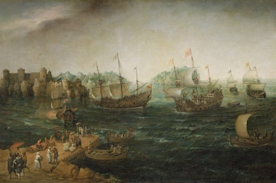

Jorge Furtado


A primeira tradução de Hamlet que se tem notícia foi feita, veja só, para o português. A proeza se deu em 1607 a bordo do navio inglês Red Dragon, ancorado na costa Oeste da África, e seu autor foi Lucas Fernandez, um negro nascido em Serra Leoa.

[Navios na costa da África. Hendrick Cornelisz Vroom, 98 x 151 cm, óleo sobre tela, 1614.]
O Red Dragon fazia parte de uma frota de três galeões a serviço da Companhia das Índias Ocidentais, em sua terceira expedição. Um dos navios tomou ventos em direção ao Brasil, mas o Red Dragon e o Hector enfrentaram longas calmarias. Para reabastecer e tratar doentes, ancoraram no porto de Freetown, na foz do Rio Mitombo, em Serra Leoa.
No dia 5 de setembro de 1607, o capitão do Red Dragon, William Keeling, recebeu a bordo um grupo de emissários do Rei Borea, entre eles seu cunhado e intérprete, descrito em seus diários como "um negro chamado Lucas Fernandez, que falava português muito bem”, e por outras testemunhas como um cristão capaz de “argumentar bem em defesa de sua fé”, fluente em português, espanhol, inglês e temne, o dialeto local.
O Capitão Keeling registrou o encontro no diário de bordo:
5 de setembro. Enviei o intérprete, de acordo com seu desejo, a bordo do Hector, onde ele fez seu desjejum, e depois veio a bordo [do Red Dragon], onde nós apresentamos a tragédia de Hamlet, e na parte da tarde fomos todos juntos à terra, para ver se podíamos caçar um elefante; acertamos sete ou oito balas nele, o que o fez sangrar abundantemente, como pode se ver em seus rastros, mas a noite se aproximava e regressamos ao navio, sem atingir nossos propósitos.
Lucas Fernandez fez a tradução simultânea de Hamlet, encenado pela tripulação inglesa. É bom lembrar que em setembro de 1607 Shakespeare estava vivo, muito vivo, no auge de sua carreira: nos últimos três anos ele havia escrito sete peças, entre elas "Otelo", "Rei Lear" e "Macbeth". No momento, estava em cartaz no Globe com os King’s Men na recém escrita “Péricles”. Não há registros - e é muito improvável - de que tenha tomado conhecimento de que sua maior criação, Hamlet, já tinha sua primeira tradução, para o português.
A primeira tradução de Shakespeare sobre a qual há registro, de Romeu e Julieta, foi feita em 1604, para o alemão, o autor é desconhecido. A segunda tradução – a primeira de Hamlet e a primeira fora da Europa - foi a de Lucas Fernandez, para o português. O feito parece ainda mais notável quando sabemos que a segunda tradução conhecida de Hamlet, esta para o alemão, só vai aparecer em 1626, quando Shakespeare já estava morto há 10 anos.
Traduzir é fazer escolhas. Sabe-se lá como Lucas Fernandez traduziu para o português as primeiras palavras da peça, a fala de Bernardo, de sentinela, ao perceber que alguém se aproxima: "Who’s there?" Sua escolha pode ter sido “Quem está aí?” (como fizeram os tradutores Cunha Medeiros e Oscar Mendes, Sophia de Mello Breyner, Millôr Fernandes, Oliveira Ribeiro Neto, José Roberto O’Shea), ou “Quem está lá?” (Anna Amélia Carneiro de Mendonça, Mario Fondelli), ou ainda “Quem vem lá?” (Péricles Eugênio da Silva Ramos, Domingos Ramos, Elvio Funk, Marilise Rezende Bertin e John Milton).
O Primeiro Folio, de 1605, descreve a cena 1 de Hamlet assim:
“Enter Barnardo and Francisco, two Centinels.”
Um fac-símile pode ser visto aqui:
http://internetshakespeare.uvic.ca/Library/facsimile/book/BL_Q2_Ham/2/?z...)
A mesma cena é descrita assim na edição da Tauchnitz (de 1843):
“Francisco on his post. Enter to him Bernardo.”
Um fac-símile pode ser visto aqui:
http://books.google.com.br/books?id=BA9GAAAAcAAJ&printsec=frontcover&dq=...
Na tradução portuguesa do Dr. Domingos Ramos (1948), a cena é descrita assim:
Cena 1, Esplanada do Castelo. Francisco está de guarda. Bernardo entra e vai ter com ele.
Bernardo – Quem vem lá?
A primeira fala (“Who’s there?”) é de Bernardo. Se Francisco está parado em seu posto e Bernardo entra, caminhando, é estranho que Bernardo pergunte quem “vem”. (“Quem vem lá és tu, eu cá estou!”) Neste caso, melhor que Bernardo diga “Quem está aí?”.
Mas se os dois sentinelas entram, cada um por um lado do palco, é natural que Bernardo pergunte “Quem vem lá?”. “Quem vem lá?” é mais formal, mais profissional para um soldado de serviço, em seu posto. “Quem está aí?” é mais coloquial, uma conversa de camaradas. Qual a melhor escolha? Há outras possíveis?
Como será que os nativos da ensolarada Serra Leoa imaginavam o cenário que abre a peça, um castelo coberto de névoas numa noite gelada do inverno dinamarquês? Acreditavam em fantasmas?
CENA – NAVIO
Um palco improvisado no convés de um galeão inglês, ancorado no porto. No palco, marinheiros ingleses encenam Hamlet. O Capitão Keeling, de espada em punho, faz o papel de Bernando. Na platéia, o Rei Borea e sua esposa, a Rainha, o intérprete Lucas Fernandez, nativos de Serra Leoa e marinheiros ingleses.
CAPITÃO KEELING (Bernardo)
Who’s there?
LUCAS
(ao Rei e a Rainha) Quem está aí? Quem é? Ou… quem está lá. Ou quem vem lá.
REI
Lá onde?
LUCAS
Lá, ou aí. O vigia está perguntando quem se aproxima, ele está de sentinela, no terraço do castelo, numa noite gelada de inverno.
REI
O que é castelo?
RAINHA
O que é inverno?
LUCAS
Castelo é uma construção de pedra, fortificada, onde mora o Rei e a Rainha, no caso, da Dinamarca. Inverno é a época mais fria do ano, faz muito frio, até o mar vira gelo.
RAINHA
O que é gelo?
LUCAS
Gelo é o estado sólido da água, quando fica muito frio. Bernardo, o sentinela, está com medo porque, na noite anterior, pensa ter visto um fantasma.
REI
Vai demorar muito?
LUCAS
A peça tem 4.024 linhas, esta é a primeira.
REI
Vai anoitecer, vamos perder os elefantes.
RAINHA
Os elefantes não vão fugir. O que é fantasma?
LUCAS
O espírito de um morto, que se faz presente.
RAINHA
E isso existe?
LUCAS
Há controvérsias.
RAINHA
E o fantasma de quem eles pensam ter visto?
LUCAS
De Hamlet.
RAINHA
Hamlet morreu?
LUCAS
Hamlet pai, não Hamlet filho.
RAINHA
O filho tem o mesmo nome do pai?
LUCAS
Sim.
RAINHA
Que falta de imaginação!
LUCAS
O pai foi assassinado.
REI
Por quem?
LUCAS
Isso se descobre em seguida.
REI
Está anoitecendo! (ameaçador) Conte logo, é uma ordem!
LUCAS
(falando rapidamente) O pai foi assassinado pelo irmão, para casar com a mãe. O fantasma conta para o filho, o filho se faz de louco, encena uma peça de teatro, a namorada morre afogada, o filho se vinga. Morrem todos.
REI
Ótimo! Agora, aos elefantes!
X
Jorge Furtado, 24.08.11
X
Fontes:
Hamlet in Africa, 1607. Gary Taylor.
http://web.archive.org/web/20041125152319/http://www.as.ua.edu/english/3...
http://web.archive.org/web/20041129010320/http://www.as.ua.edu/english/3...
http://web.archive.org/web/20041129010439/http://www.as.ua.edu/english/3...
Shakespeare and Amateur Performance: A Cultural History. Michael Dobson, Cambridge University Press, 2011.
http://www.cambridge.org/aus/catalogue/catalogue.asp?isbn=9780521862349&...
http://books.google.com.br/books?hl=pt-BR&lr=&id=CGQI-HeJV5IC&oi=fnd&pg=...
Shakespeare "the first European", de Jonathon Brown.
http://www.europe.org.uk/index/-/id/358/
At Sea about Hamlet at Sea: A Detective Story. Bernice W. Kliman, The Johns Hopkins University Press, 2011.
http://muse.jhu.edu/login?uri=/journals/shakespeare_quarterly/v062/62.2....
Chambers, E. K. William Shakespeare: A Study of Facts and Problems. 2 vols. Oxford: Oxford University Press, 1930.
http://bardfilm.blogspot.com/2010/10/evidence-for-shakespeare-off-coast-...
lista de traduções de Shakespeare, em ordem cronológica:
http://pages.unibas.ch/shine/translators.htm
sobre William Keeling:
http://en.wikipedia.org/wiki/William_Keeling
sobre o navio Red Dragon:
http://en.wikipedia.org/wiki/Red_Dragon_(1595)
sobre a Companhia das Índias Ocidentais:
http://en.wikipedia.org/wiki/British_East_India_Company
mapa da costa da África, início do século XVII:
http://1.bp.blogspot.com/_Qi_l_pmRm0g/TLiHX1RrmXI/AAAAAAAABlE/nZAAYyRznck/s1600/17th+C.+Map+of+the+African+Coast.jpg

{kind=link}